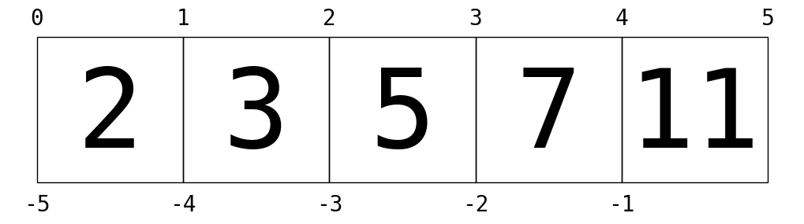

Appendix: Figure Code
Contents

This notebook contains an excerpt from the Whirlwind Tour of Python by Jake VanderPlas; the content is available on GitHub.
The text and code are released under the CC0 license; see also the companion project, the Python Data Science Handbook.
< Resources for Further Learning | Contents |
Appendix: Figure Code#
This section contains code used to generate figures that appear in this report.
%matplotlib inline
import matplotlib.pyplot as plt
import os
if not os.path.exists('fig'):
os.makedirs('fig')
Section 6: List Indexing#
This figure helps visualize how Python’s indexing works.
L = [2, 3, 5, 7, 11]
fig = plt.figure(figsize=(10, 4))
ax = fig.add_axes([0, 0, 1, 1], xticks=[], yticks=[], frameon=False,
aspect='equal')
for i in range(5):
ax.add_patch(plt.Rectangle([i - 0.5, -0.5], 1, 1, fc='none', ec='black'))
ax.text(i, -0.05, L[i], size=100,
ha='center', va='center', family='monospace')
for i in range(6):
ax.text(i - 0.5, 0.55, str(i), size=20,
ha='center', va='bottom', family='monospace')
for i in range(5):
ax.text(i - 0.5, -0.58, str(-5 + i), size=20,
ha='center', va='top', family='monospace')
ax.axis([-0.7, 4.7, -0.7, 0.7]);
fig.savefig('fig/list-indexing.png');
